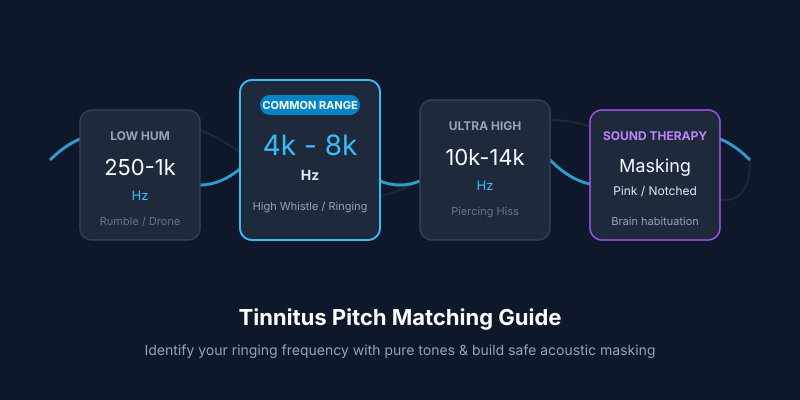

Tinnitus Pitch Matching: How to Find the Frequency of Your Ringing Ears
Published Aug 28, 2026 • 8 min read
When you experience tinnitus, the sound in your head isn't random static—it is almost always focused around a specific acoustic pitch. For some, it sounds like a high-pitched tea kettle (8,000 Hz); for others, an old CRT television whine (14,000 Hz) or a low fluorescent hum (250 Hz).
Pinpointing your exact tinnitus pitch (known in audiology as pitch matching) is a powerful first step toward managing it. It allows you to describe your condition accurately to an audiologist and build customized acoustic sound therapy to help your brain filter it out.
Quick guide to tinnitus pitch ranges
- 4,000 Hz to 8,000 Hz (Most Common): Typical for noise-induced tinnitus (concerts, headphones, power tools). This corresponds to the high-frequency "acoustic notch" where inner ear hair cells take the most damage.
- 10,000 Hz to 14,000 Hz (Ultra-High Hiss): Often linked with mild age-related hearing decline (presbycusis) or stress-induced auditory hyperactivity.
- 125 Hz to 500 Hz (Low Hum / Drone): Less common; can indicate Eustachian tube dysfunction, middle-ear pressure, or low-frequency conductive loss.
Why Does Tinnitus Settle at a Specific Frequency?
Tinnitus is rarely generated in the ear itself—it is created in the auditory cortex of your brain.
When tiny sensory hair cells in the cochlea are damaged by loud sound or age, they stop sending electrical signals for that particular frequency band (for example, 6,000 Hz). The brain notices this missing input and essentially "turns up the neural volume gain" trying to detect the lost sound. The result is a persistent phantom electrical ringing at that exact pitch.
This is why running an Online Hearing Screening often reveals a subtle dip in hearing sensitivity right around your tinnitus frequency.
How to Match Your Tinnitus Pitch Safely (4 Steps)
You can match your tinnitus tone using our free Online Tone & Frequency Generator with headphones in a quiet room:
Start at Very Low Volume
Put on over-ear headphones. Turn your system volume down to 10–20%. Never play loud tones into ears with tinnitus, as sudden high volume can trigger a spike.
Do a "High vs. Low" Bracket Test
Open the tone generator and test three anchor tones: 1,000 Hz, 4,000 Hz, and 8,000 Hz. Ask yourself: "Is my internal ring higher or lower than this sound?"
Fine-Tune the Frequency Slider
If your ringing is higher than 4 kHz but lower than 8 kHz, step through 5,000 Hz, 6,000 Hz, and 7,000 Hz. When the external tone harmonizes or merges with your internal sound, you've found your pitch.
Match the Loudness (Minimum Masking Level)
Adjust the slider volume until the tone is just barely as loud as your ringing. Note this setting as your baseline.
How to Use Your Frequency for Relief (Sound Masking)
Once you know your frequency, you can use tailored acoustic masking to help your brain habituate and stop focusing on the phantom sound:
Pink Noise vs. White Noise
Standard white noise has equal energy across all frequencies, which can sound harsh. Pink noise rolls off high frequencies by 3 dB per octave, creating a gentler waterfall sound that is much easier to sleep with.
Play Pink & White Noise in Speaker Test →Notched Sound Therapy
Audiologists often use "notched music"—filtering out a narrow frequency notch right around your tinnitus pitch. Listening to notched audio encourages the auditory cortex neurons to rebalance without amplifying the ringing.
Requires pitch match precision within ±200 Hz.When to See a Doctor Immediately
While most tinnitus is benign noise exposure, you should seek prompt medical evaluation from an ENT or audiologist if you experience:
- Pulsatile tinnitus: Ringing or whooshing that pulses in sync with your heartbeat.
- Unilateral tinnitus: Ringing in only one ear with no obvious external cause.
- Sudden hearing loss: Hearing dropped rapidly within 72 hours (this is a medical emergency requiring urgent treatment).
- Associated symptoms: Dizziness, vertigo, ear pain, or discharge.